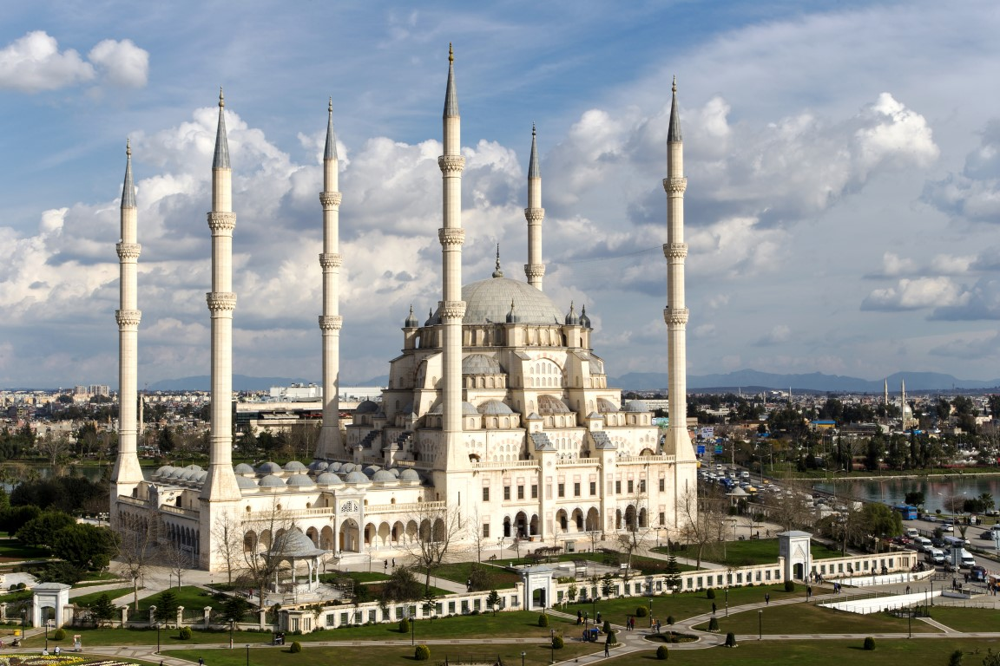
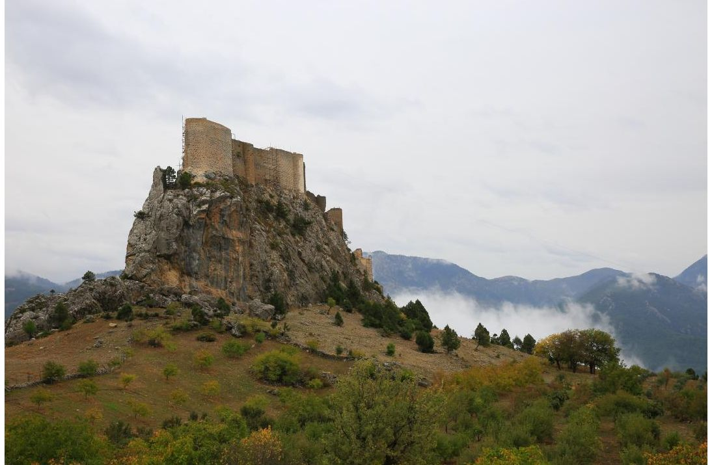
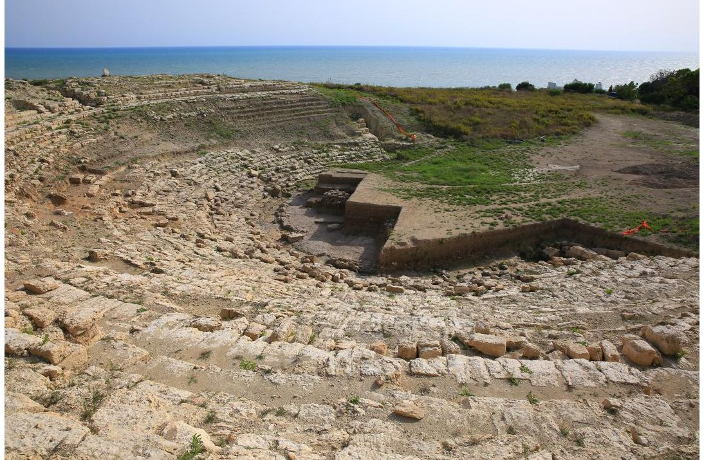
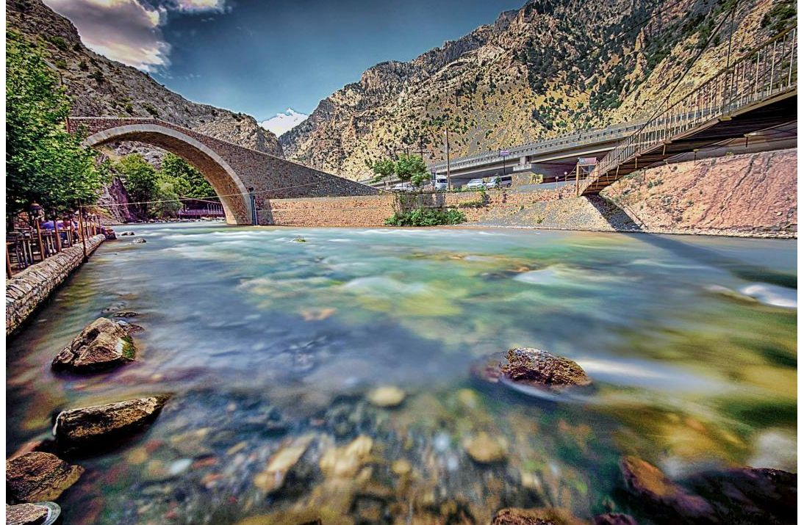
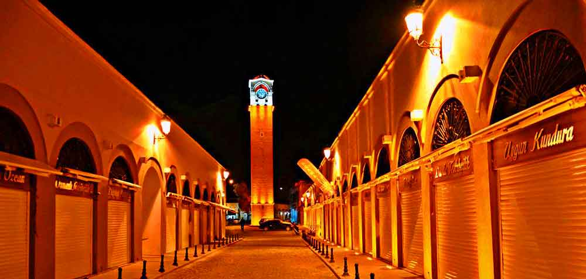
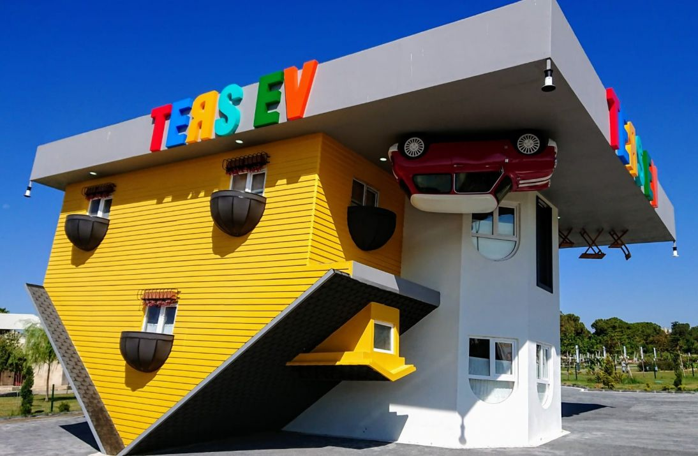
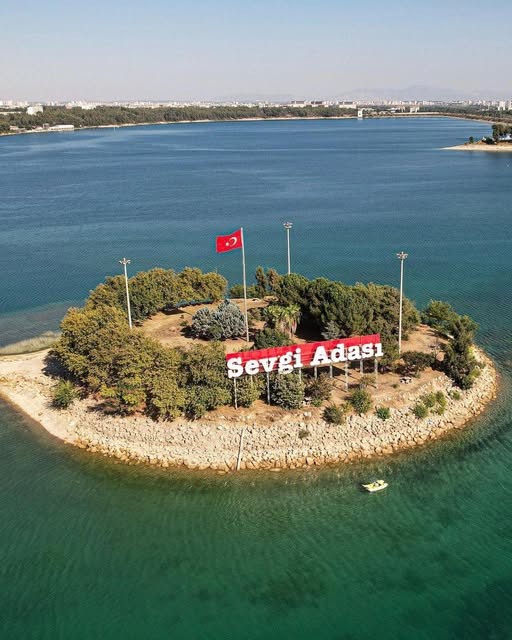
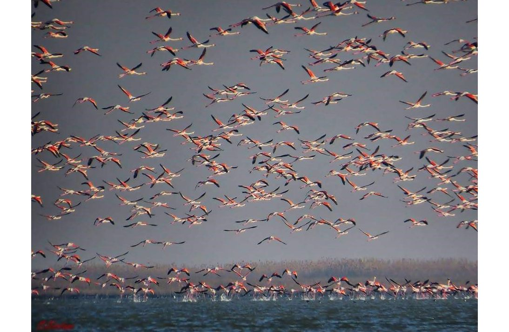

Büyük Çamlıca Camisi'nden sonra Türkiye'nin ikinci en büyük camisi olan Sabancı Merkez Camii, 28 bin 500 kişilik cemaat kapasitesine sahiptir. 1998 yılında hizmete açılmış olan caminin görünüşü Sultanahmet Camisi'ni andırmaktadır

yüzyılda Bizanslıların kervan rotasını kontrol etmek için inşa ettiği Feke Kalesi, 8 burcu ve gözetleme kulesiyle günümüze kadar korunmuştur. Selçukluların da kullandığı bu tarihi kaleyi ve yol üstündeki Karakilise'yi mutlaka görmelisiniz.

M.Ö. 5. yüzyıla dayanan Magarsus Antik Kenti, antik dünyada deniz manzarasına sahip tek tiyatrosuyla öne çıkar. Adana'nın en köklü geçmişine tanıklık etmek için bu eşsiz tarihi kenti mutlaka ziyaret etmelisiniz.

Pozantı’nın simgesi Şekerpınarı ve Akköprü, Çukurova yolculuklarının en sevilen mola noktasıdır. Burada nehir kenarında dinlenirken Adana kebabından halka tatlıya kadar şehrin eşsiz lezzetlerini deneyimleyebilirsiniz.

1882 yılında inşa edilen Büyük Saat, 32 metre boyuyla Türkiye'nin en uzun saat kulesidir. Kazancılar Çarşısı'nın hemen yanında yer alan bu tarihi yapı, Adana'nın en ikonik simgelerinden biridir.

Çocuklar ve gençler başta olmak üzere her yaştan insanın gidip görebileceği Ters Ev, sizlere keyifli dakikalar yaşatacaktır. Pazar günü hariç haftanın diğer günleri 10:00-21:00 saatleri arasında hizmet veren ters evi, Adana gezilecek yerler listenize eklemelisiniz

Seyhan Gölü'ndeki Sevgi Adası, yürüyüş ve manzara keyfi için harika bir rotadır. Sular yüksekken tekneyle, çekildiğinde ise yürüyerek ulaşılabilir; ancak Ağustos-Ekim aylarında ziyarete kapalıdır.

Akyatan Gölü, zengin yaban hayatı ve ekosistemiyle flamingo, kızıl geyik ve saz kedisi gibi pek çok türe ev sahipliği yapar. Özellikle yaban hayatı fotoğrafçıları için eşsiz manzaralar sunan bu gölü mutlaka listenize eklemelisiniz.
Şehit Kansu Küçük Ateş Mah., Yunus Emre Cad. No:8, 80750
Kadirli/Osmaniye
kadirlimyo@osmaniye.edu.tr
Samed Koç |